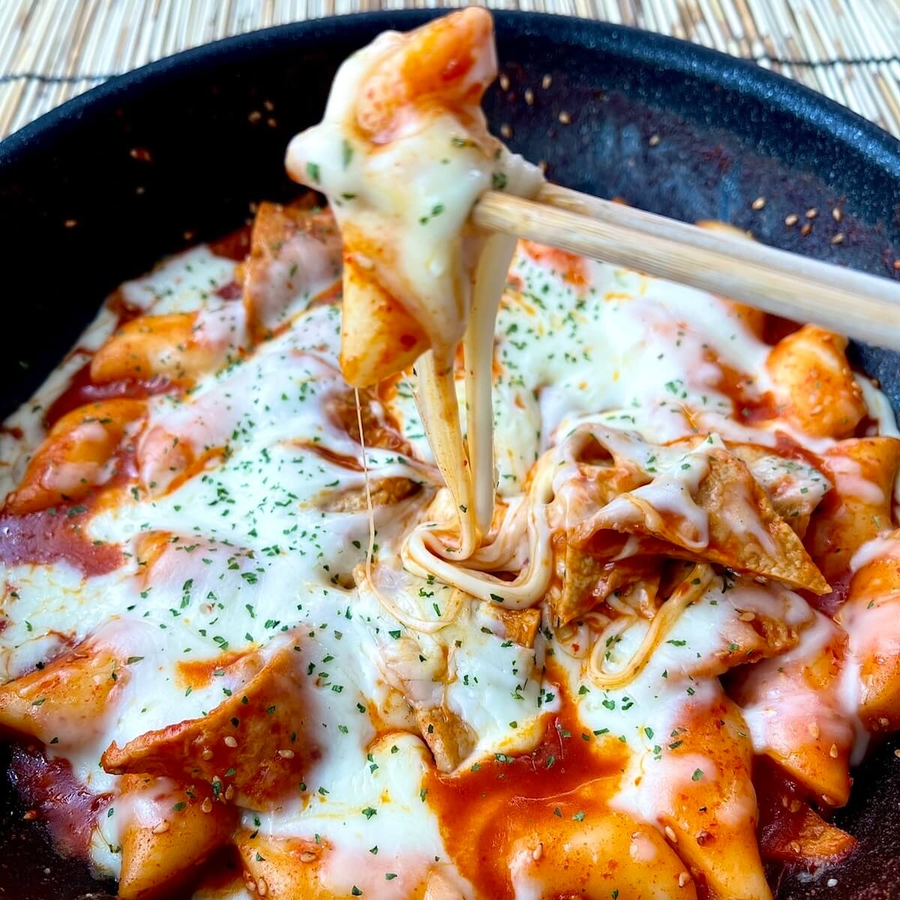

Tteokbokki

Spicy Rice Cakes
A Classic Korean dish that will warm your soul and your heart
Ingredients
- 3 cups water
- 2 dried anchovies, or more to taste
- 3 tablespoons chile paste
- 2 tablespoons white sugar
- 1 tablespoon soy sauce
- 1 tablespoon corn syrup
- 2 Korean fish cakes, sliced
- ½ onion, thickly sliced
- 1 spring onion, thickly sliced
Directions
- Combine water and anchovies in a saucepan and bring to a boil. Cook for 10 minutes. Remove anchovies.
- Combine chile paste, sugar, soy sauce, and corn syrup in a bowl to make the sauce.
- Add rice cakes and onion to the anchovy water in the saucepan. Add sauce. Bring to a boil and cook for 5 minutes, stirring occasionally. Add spring onion and boil 3 minutes more.